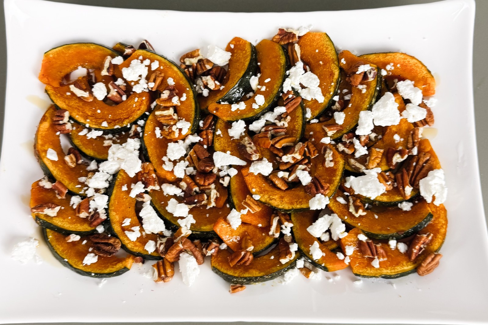

She’s the Goose

Thanksgiving · On the Side
Kabocha roasted until tender, then finished with maple, toasted pecans and goat cheese. The skin stays on and turns tender in the oven.
Slice the squash. Heat the oven to 375°F. Halve the squash, scoop out the seeds, and cut it into slices about ½ inch thick. Leave the skin on; it turns tender as it roasts.
Season. Toss the slices with the olive oil, salt and pepper. Lay them flat on a sheet pan in a single layer.
Roast. Roast for about 25 minutes, flipping halfway through, until tender when pierced with a knife.
Finish. Arrange the slices overlapping on a platter. Drizzle with the maple syrup, then scatter the pecans and goat cheese over the top.
Toasting the pecans. Toast them in a dry skillet over medium heat for 3–5 minutes, shaking the pan, until fragrant.
For more color. Roast at 425°F for 15–20 minutes instead, flipping halfway, for darker, caramelized edges.
A squeeze of lemon. A little lemon juice over the top at the end brightens it.
Make ahead. Roast the squash a few hours ahead and rewarm it; add the maple, pecans and goat cheese just before serving.
On the same table. It goes alongside the apple cider roasted turkey and the mashed turnips.
Letters from She’s the Goose
A letter and a recipe from me, every Tuesday.
Thank you — look for a note to confirm.